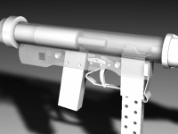
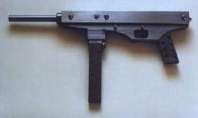
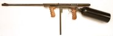
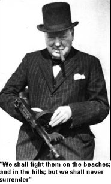

|
 |
THE HOMEGUNSMITH.COM laws will we ever overthrow Britains anti-gun fascist gun laws. "Vengeance will be mine, one bullet at a time" |
 |
|
Air Machine Gun Plans!
  |
Articles by or about Philip Luty:
"Securing the Future of Firearms Ownership"
Welcome to my Homemade Firearms web site. The web site devoted to the homemade gun and techniques of improvised firearm manufacture. In these days of increasingly oppressive anti-gun policies and almost police state politics affecting many other areas of our lives, it has never been more important for the aware citizen to know how a working firearm is constructed.
|
Let's face a few facts. The faceless bureaucrats who are determined to disarm law abiding citizens are not doing so because they are "Nice People" concerned about you or I being the victim of a crook with a gun.
Their Friends in the media who miss no opportunity to churn out the lies, myths and misinformation that have, in the eyes of many, demonised gun owners do not do so because they wish to disarm the local 'Drug lord'. They do so because they see the private ownership of firearms as a threat to their own power base and an obstacle in the way of their 'New world order' mentality. An Orwellian society, nanny state, surveillance society, call it what you wish, they are all part of the same despotic ideas that have, in the last century alone, lead Europe twice down the path of dictatorship and destruction. An armed society is the 'safety net', a last wall of defence, the people possess (Possessed?) against the 'Big brother' nightmare many see being created all around us. No wonder those with ill intent would like to see the people disarmed!
Some people may find such rhetoric distasteful but it is a truth some find harder to swallow than the cosy ideas we are brainwashed into thinking make our society safer by those who wish to control what we believe, think and do. Some naive individuals adhere to the view that only the police and army should have access to firearms. I call that a police state mentality and a very dangerous mentality at that. History is littered with examples of regimes around the world that have first disarmed their own citizens, always behind the smoke screen of 'law and order' and then proceeded to commit atrocities or all out genocide against their own unarmed and helpless citizens. In such circumstances, the ability of the private individual to build his own homemade/improvised gun, or perhaps go into full scale underground arms manufacture, maybe of even greater importance.
My own view is that the gun not only belongs in the hands of the agents of the state (they can never be disarmed) but in the hands of the people as a whole. This is the surest way of maintaining the correct balance of power between state and citizen. The mad rush of government to create a 'gun free' Utopia will not, of course, have any effect on the crime rate. The criminal, by definition, does not obey the law and is therefore unaffected by any anti firearms legislation. Gun control will, however, create more and more victims of violent crime as long as we allow ourselves to be disarmed behind the smokescreen of 'Crime control'. This is the unpalatable truth you will never read in the media or hear from any politically correct politician.
Unfortunately, while we continue to allow the media anti gun propaganda mills to churn out their lies, myths and misinformation we will continue to see the destruction of the ancient liberties and freedoms once securely enshrined under the "Common laws of England".
When any government deprives a citizen of his freedom or property, the individual must take action to publicise his grievances. To this end, I hope to illustrate in the following pages, the futility of gun control, and that no amount of arbitrary legislation can ever prevent those wanting firearms from owning them. The individual who has the ability to construct his own homemade gun can never be permanently disarmed by any level of gun control legislation.
So as to allow you to get a 'feel' for the subject of homemade guns, the following pages illustrate how a reasonably light weight and portable homemade Machine gun was assembled from readily available 'Off the shelf' materials and components. No lathe or milling machine was required or used.
The firearm that can truthfully be described as "a homemade gun" should be one built using the type of hand tools and materials that the average individual could easily acquire.